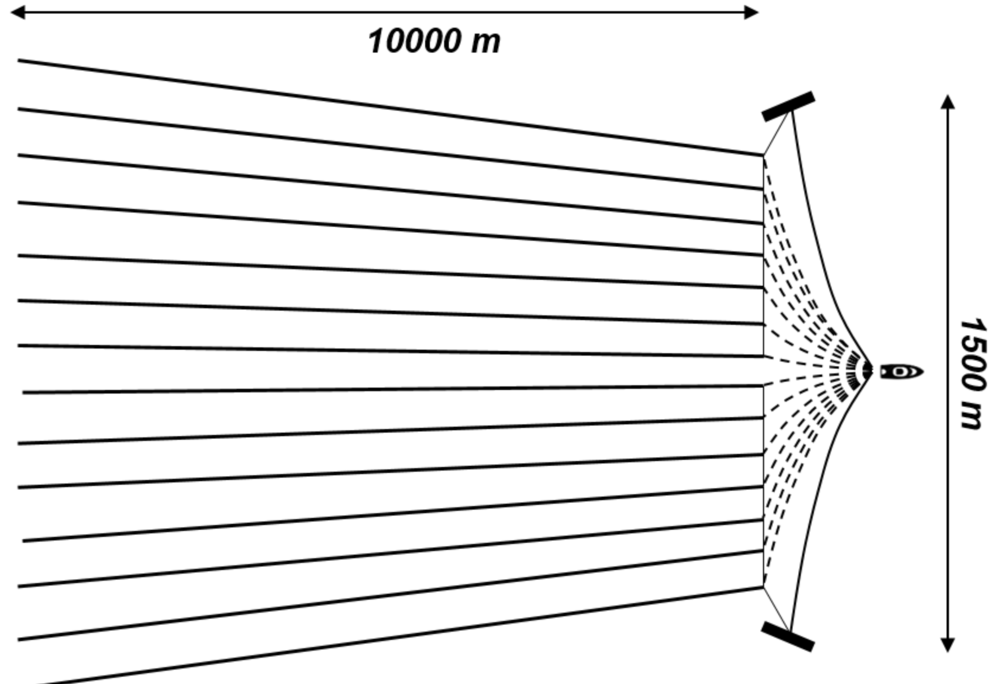

MAM5-INUM - Commande optimale
TP 1 - Navigation problem (a.k.a. Zermelo-Markov-Dubins)
Special thanks: P. Negre & M. Sadak (Polytech Nice Sophia)
One considers a ship in a constant current, \(0 \leq w \lt 1\). The angle of the velocity (wrt. to the water) is controlled, leading to the following dynamics:
\[ \begin{array}{rcl} \dot{x}(t) &=& w+\cos\theta(t),\quad t \in [0,t_f]\\ \dot{y}(t) &=& \sin\theta(t),\\ \dot{\theta}(t) &=& u(t). \end{array} \]
The turning rate (= curvature of turns) is limited, so \(|u(t)| \leq 1\). There boundary conditions at \(t=0\) and \(t=t_f\) on the position \((x,y)\) and on the angle \(\theta\) of the velocity in the water referential. The final time is to be minimised. The problem originates from a collaboration with the French company CGG that is interested in optimal maneuvers for very large ships doing marine prospection.

#JuMP model, Ipopt solver
using JuMP, Ipopt, Plots
sys = Model(optimizer_with_attributes(Ipopt.Optimizer,"print_level"=> 5))
set_optimizer_attribute(sys,"tol",1e-6)
set_optimizer_attribute(sys,"max_iter",1000)
# Parameters
w = 0.8
x0 = 0
y0 = 0
θ0 = π/7
xf = 4
yf = 7
θf =-π/2
N = 100
# Bounds for variables
@variables(sys,begin
x[1:N + 1]
y[1:N + 1]
θ[1:N + 1]
-1 ≤ u[1:N] ≤ 1
0 ≤ Δt ≤ 1
end)
# Objective
@objective(sys, Min, Δt)
# Constraints
@constraints(sys, begin
x[1] == x0
y[1] == y0
θ[1] == θ0
x[N + 1] == xf
y[N + 1] == yf
θ[N + 1] == θf
end)
# Dynamics: Euler scheme
for j in 1:N
@NLconstraint(sys, # x' = w + cos(theta)
x[j+1] == x[j] + Δt * (w + cos(θ[j])))
@NLconstraint(sys, # y' = sin(theta)
y[j+1] == y[j] + Δt * sin(θ[j]))
@NLconstraint(sys, # theta' = u
θ[j+1] == θ[j] + Δt * u[j])
end# Solves for the control and state
println("Solving...")
status = optimize!(sys)
println("Solver status : ",status)
x1 = value.(x)
y1 = value.(y)
θ1 = value.(θ)
u1 = value.(u)
println("Cost : " , objective_value(sys))
println("tf = ", value.(Δt) * N)
# Plots: states
Δt1 = value.(Δt)
t = (0:N) * Δt1
x_plot = plot(t, x1; xlabel="t", ylabel="position x", legend=false, fmt=:png)
y_plot = plot(t, y1; xlabel="t", ylabel="position y", legend=false, fmt=:png)
θ_plot = plot(t, θ1; xlabel="t", ylabel="θ", legend=false, fmt=:png)
u_plot = plot(t[1:end-1], u1; xlabel="t", ylabel="control", legend=false, fmt=:png)
display(plot(x_plot, y_plot, θ_plot, u_plot; layout=(2,2)))
# Plots: trajectory
step = 5
traj_plot = plot(x1, y1; c=:black, lw=3)
plot!(size=(600,600))
scatter!(traj_plot, x1[1:step:end], y1[1:step:end]; c=:red, legend=false)